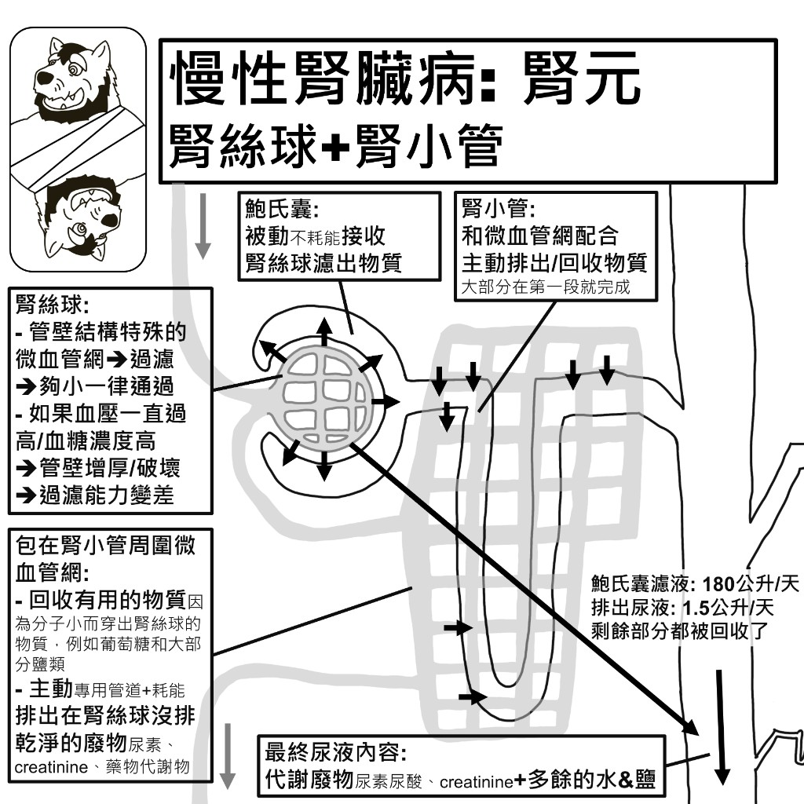
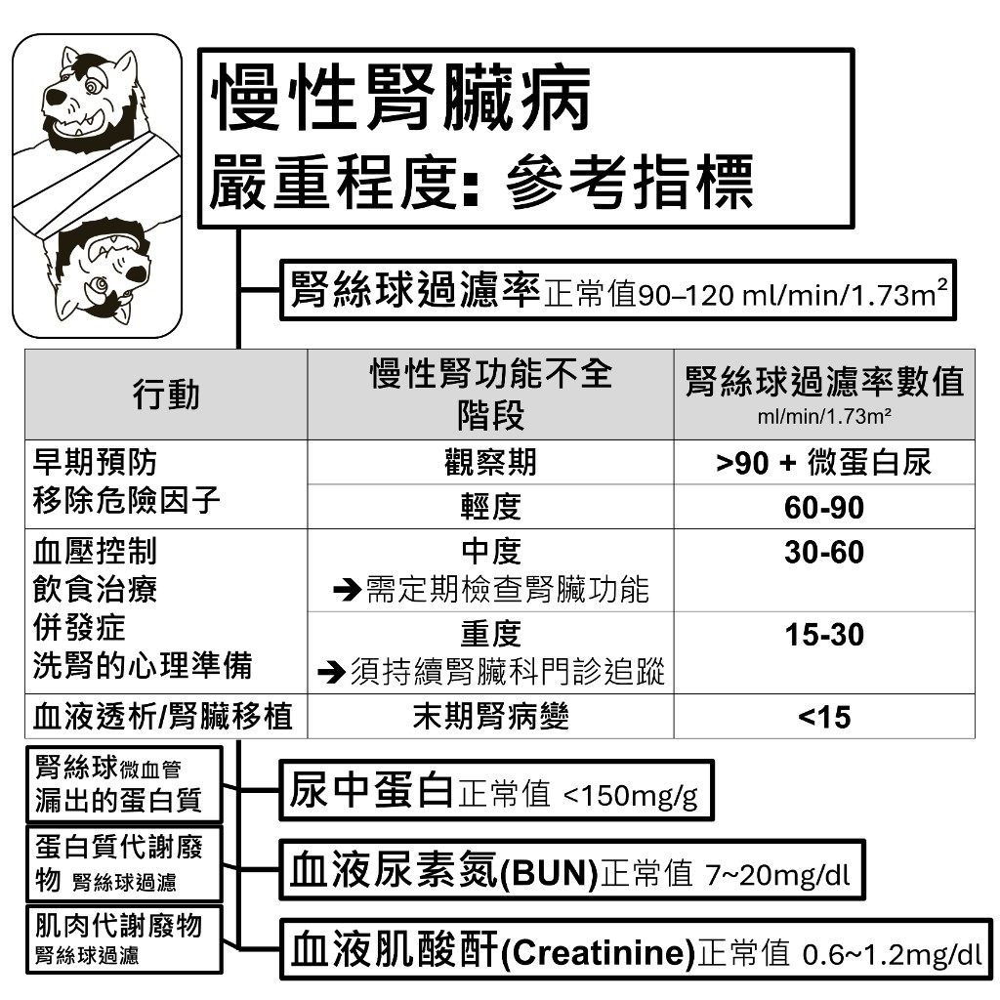
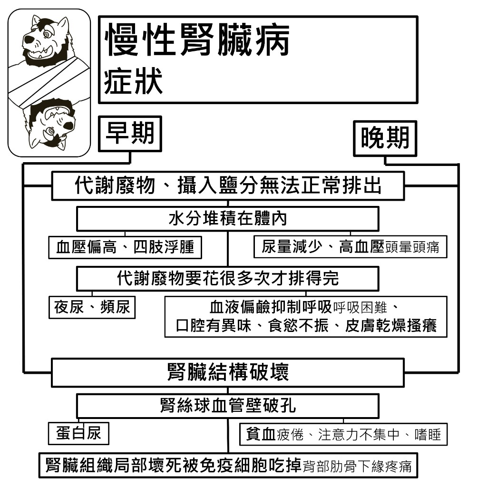
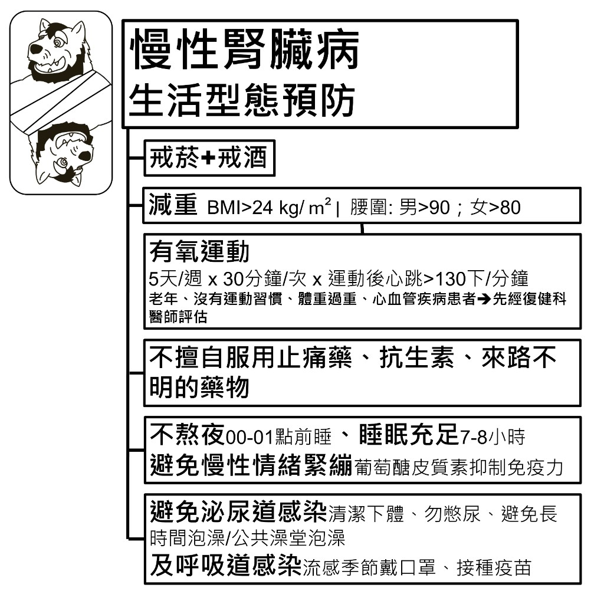
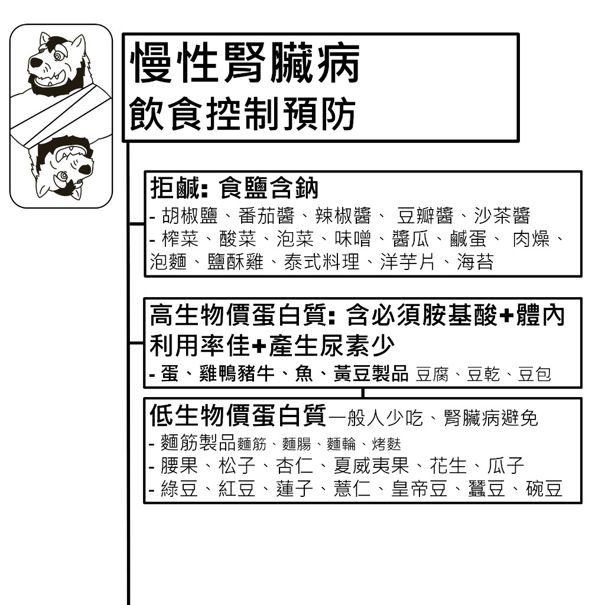
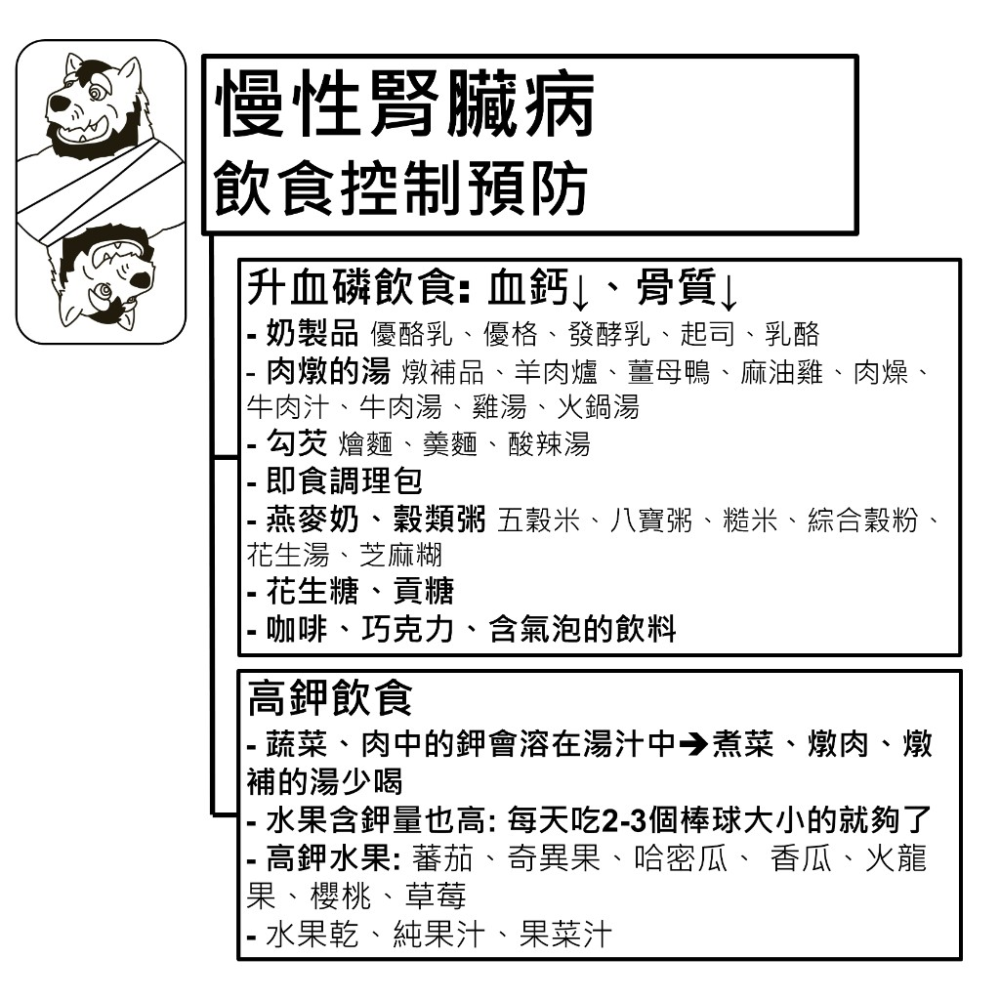
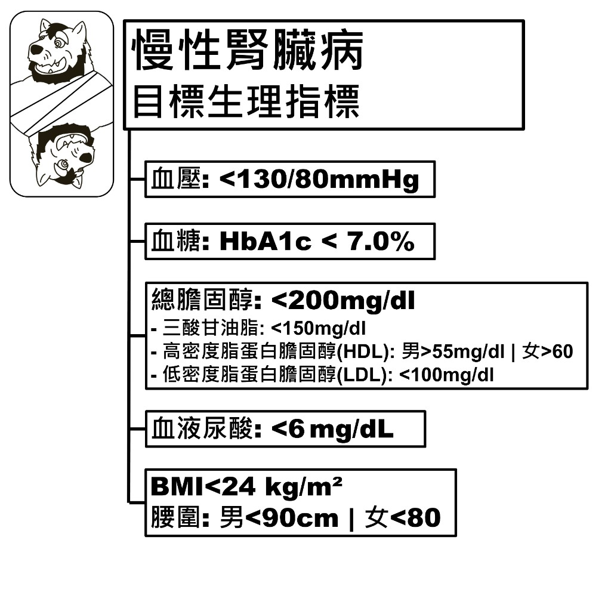

腎元：腎絲球＋腎小管
腎臟的基本功能單位是腎元，由腎絲球與腎小管組成。腎絲球負責過濾，腎小管負責回收有用物質、排出廢物。一天約過濾 180 公升，最後只排出約 1.5 公升尿液，其餘都被回收。

嚴重程度：參考指標
判斷腎功能主要看腎絲球過濾率（GFR），正常值為 90–120 ml/min/1.73m²。數值愈低代表腎臟過濾能力愈差，不同階段要做的事也不一樣。

慢性腎功能不全的階段
| 階段 | 腎絲球過濾率 (ml/min/1.73m²) | 行動 |
|---|---|---|
| 觀察期 | > 90 ＋ 微蛋白尿 | 早期預防 移除危險因子 |
| 輕度 | 60–90 | |
| 中度 → 需定期檢查腎臟功能 | 30–60 | 血壓控制 飲食治療 |
| 重度 → 須持續腎臟科門診追蹤 | 15–30 | 併發症處理 洗腎的心理準備 |
| 末期腎病變 | < 15 | 血液透析／腎臟移植 |
其他三個常看的數值
| 指標 | 是什麼 | 正常值 |
|---|---|---|
| 尿中蛋白 | 腎絲球微血管漏出的蛋白質 | < 150 mg/g |
| 血液尿素氮 (BUN) | 蛋白質代謝廢物，由腎絲球過濾 | 7～20 mg/dl |
| 血液肌酸酐 (Creatinine) | 肌肉代謝廢物，由腎絲球過濾 | 0.6～1.2 mg/dl |
症狀
症狀來自兩條路徑：代謝廢物與鹽分排不出去，以及腎臟結構本身被破壞。同一條路徑的症狀，會隨病程從早期表現變成晚期表現。

代謝廢物、攝入鹽分無法正常排出
| 機轉 | 早期 | 晚期 |
|---|---|---|
| 水分堆積在體內 | 血壓偏高、四肢浮腫 | 尿量減少、高血壓（頭暈頭痛） |
| 代謝廢物要花很多次才排得完 | 夜尿、頻尿 | 血液偏鹼抑制呼吸（呼吸困難）、口腔有異味、食慾不振、皮膚乾燥搔癢 |
腎臟結構破壞
| 機轉 | 早期 | 晚期 |
|---|---|---|
| 腎絲球血管壁破孔 | 蛋白尿 | 貧血（疲倦、注意力不集中、嗜睡） |
| 腎臟組織局部壞死被免疫細胞吃掉 | 背部肋骨下緣疼痛 | |
生活型態預防

戒菸＋戒酒
減重
- BMI > 24 kg/m² 要減重
- 腰圍：男 > 90 cm｜女 > 80 cm 要減重
有氧運動
5 天／週 × 30 分鐘／次 × 運動後心跳 > 130 下／分鐘。
💡 老年、沒有運動習慣、體重過重、心血管疾病患者 → 先經復健科醫師評估再開始。
不擅自服用止痛藥、抗生素、來路不明的藥物
不熬夜、睡眠充足
- 00–01 點前睡，睡滿 7–8 小時
- 避免慢性情緒緊繃：葡萄醣皮質素會抑制免疫力
避免感染
- 泌尿道感染：清潔下體、勿憋尿、避免長時間泡澡或公共澡堂泡澡
- 呼吸道感染：流感季節戴口罩、接種疫苗
飲食控制：鈉與蛋白質

拒鹹：食鹽含鈉
- 調味料：胡椒鹽、番茄醬、辣椒醬、豆瓣醬、沙茶醬
- 加工食品：榨菜、酸菜、泡菜、味噌、醬瓜、鹹蛋、肉燥、泡麵、鹽酥雞、泰式料理、洋芋片、海苔
高生物價蛋白質：可以吃
含必須胺基酸、體內利用率佳、產生尿素少。
- 蛋、雞鴨豬牛、魚
- 黃豆製品：豆腐、豆乾、豆包
低生物價蛋白質：一般人少吃，腎臟病避免
- 麵筋製品：麵筋、麵腸、麵輪、烤麩
- 堅果種子：腰果、松子、杏仁、夏威夷果、花生、瓜子
- 豆類：綠豆、紅豆、蓮子、薏仁、皇帝豆、蠶豆、碗豆
飲食控制：磷與鉀

升血磷飲食：血鈣↓、骨質↓
- 奶製品：優酪乳、優格、發酵乳、起司、乳酪
- 肉燉的湯：燉補品、羊肉爐、薑母鴨、麻油雞、肉燥、牛肉汁、牛肉湯、雞湯、火鍋湯
- 勾芡：燴麵、羹麵、酸辣湯
- 即食調理包
- 燕麥奶、穀類粥：五穀米、八寶粥、糙米、綜合穀粉、花生湯、芝麻糊
- 花生糖、貢糖
- 飲品：咖啡、巧克力、含氣泡的飲料
高鉀飲食
- 蔬菜、肉中的鉀會溶在湯汁中 → 煮菜、燉肉、燉補的湯少喝
- 水果含鉀量也高：每天吃 2–3 個棒球大小的就夠了
- 高鉀水果：蕃茄、奇異果、哈密瓜、香瓜、火龍果、櫻桃、草莓
- 要避免：水果乾、純果汁、果菜汁
目標生理指標
慢性腎臟病要顧的不只是腎功能本身，血壓、血糖、血脂、尿酸與體位都會影響腎臟惡化的速度。

| 項目 | 目標值 |
|---|---|
| 血壓 | < 130/80 mmHg |
| 血糖 | HbA1c < 7.0% |
| 總膽固醇 | < 200 mg/dl |
| 三酸甘油脂 | < 150 mg/dl |
| 高密度脂蛋白膽固醇 (HDL) | 男 > 55 mg/dl｜女 > 60 mg/dl |
| 低密度脂蛋白膽固醇 (LDL) | < 100 mg/dl |
| 血液尿酸 | < 6 mg/dL |
| BMI | < 24 kg/m² |
| 腰圍 | 男 < 90 cm｜女 < 80 cm |
💡 血壓、血糖、血脂的控制細節，可以參考三高（代謝性疾病）那一頁。